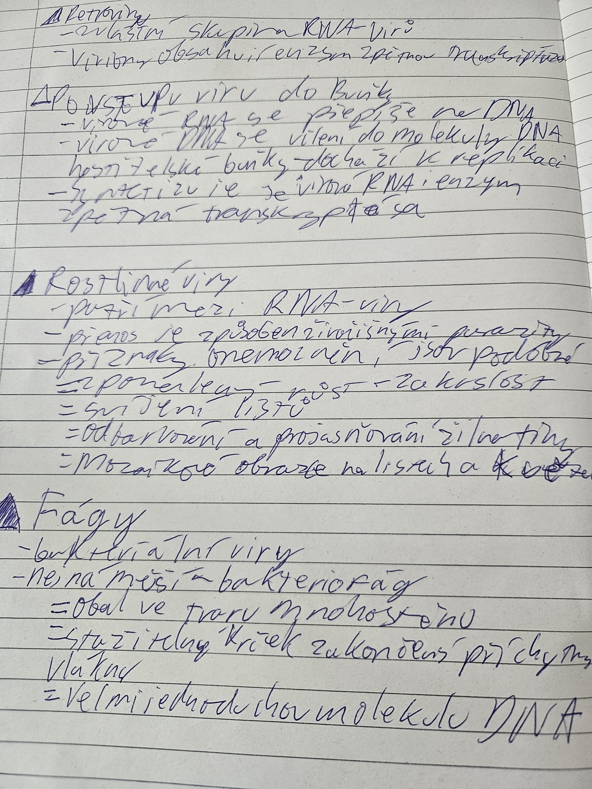
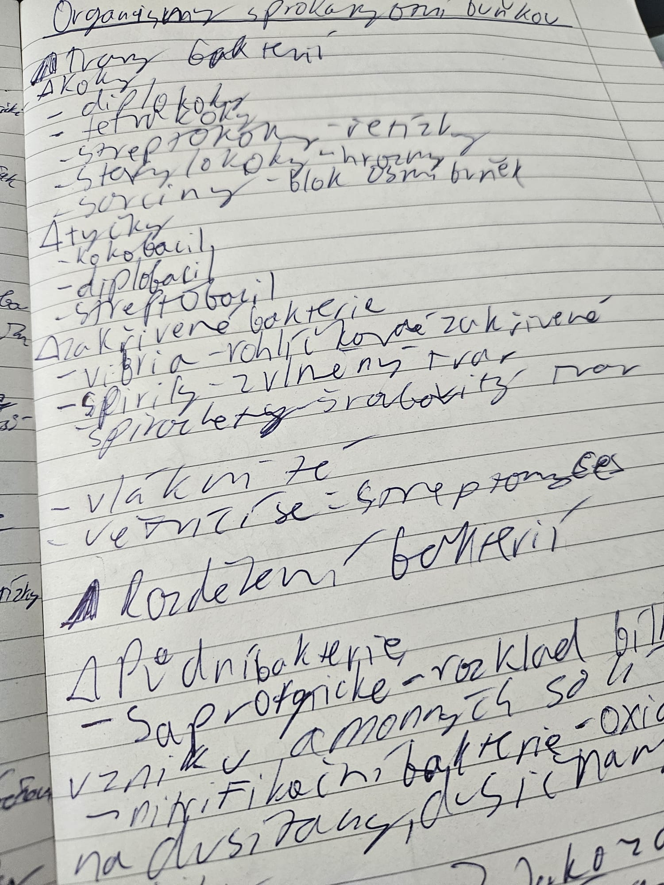

Toto psaní projednává o mém dosti unikátním systému zapisování poznámek, který je dosti přehledný, a to využívá pouze jedno obyčejné psadlo.
1. Touha po kvalitním zapisování
Od metody zapisování poznámek očekávám několik věcí. Primárně chci aby byly kapitoly, podkapitoly, body, podbody a další prvky jasně odlišeny, aby se v tom dalo rychle orientovat. Dále chci aby byly poznámky přehledné a aby se v nich dalo rychle vyhledávat.

2. Vznik mého osobního systému zapisování
Začalo to ve druhém stupni základní školy. Přírodopis mě na základní škole Pod Marjánkou učila skvělá paní učitelka Kimáková. Na tabuli využívala systém zapisování pomocí trojúhelníků a odrážek v podobě pomlček. Nejprve napsala nadpis, pod nejž začala psát body v podobě trojúhelníků, nutno dodat že to byly vyplněné trojúhelníky. Jakmile pak došlo na to udělat podkapitolu tak přešla na odrážky v podobě pomlček. A takto to pokračovalo dál a dál. Tento systém se mi zalíbil a začal jsem ho využívat i já. Postupem času jsem si ho upravil dle svého, a tak vznikl můj osobní systém zapisování poznámek.
Evoluce mého zapisovacího systému
- Začátek: V šesté třídě jsem adoptoval systém paní učitelky Kimákové.
- Kapitoly: Na konci šestého ročníku a počátku sedmého jsem zdokonalil vyplněné trojúhelníky, ty byly rezervované pouze pro názvy kapitol. Pod nadpisem byly pouhé odrážky, jakmile došlo na kapitolu udělal jsem vyplněný trojúhelník.
- Podkapitoly: Na počátku osmé třídy jsem zavedl nový způsob zapisování podkapitol. Byly to nevyplněné trojúhelníky. Toto mi umožnilo lépe strukturovat poznámky a zvýšit jejich přehlednost.
- Podbody: Rozloučil jsem se s základkou a nastoupil na gymnázium Arabská. Přišla i nová učitelka, na gymnáziu teda paní profesorka Šebková. Hned v její první hodině, kdy nám povídala o virech, mi do hlavi vlezl nápad podbodů v bodobě symbolu =, ten dobře seděl s již existujícímy pomlčkamy -.
3. Aktuální stav mého zapisování
V současné době využívám svůj systém zapisování poznámek na gymnáziu Arabská. Tento systém mi umožňuje efektivně organizovat informace a rychle se v nich orientovat. Díky jasnému rozlišení kapitol, podkapitol a podbodů mohu snadno najít potřebné informace a připravit se na zkoušky či prezentace. Určitě ale velké díky paní učitelce Kimákové a jejím trojúhelníkům.
